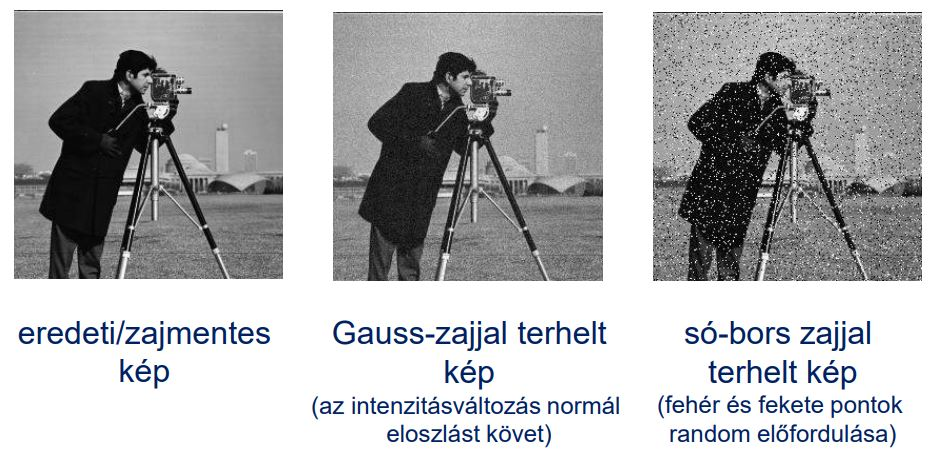

Zaj: A képpont-intenzitások nemkívánatos változása

Vesszük egy képpontnak egy környezetét, és vesszük ebben a környezetben az összes képpont átlagát. Ezzel az átlag lesz a képpont új értéke.
Ezt az átlagolást konvolúcióval is végezhetjük, ahol a konvolúciós maszkunkban minden érték , ha -es a maszk.
minél nagyobb környezetet nézünk, annál erősebb a simító hatás
haszna:
csökkenti a zajt
kára:
gyengíti az éleket
homályossá teszi a képet
súlyozott átlagolást is lehet csinálni - konvolúció
a legnagyobb súly az aktuális pontunknak legyen
ahogy távolodunk a ponttól, annál kisebbek legyenek a súlyok
ahogy távolodunk a ponttól, annál kisebbek legyenek a súlyok
erre nagyon jó a gauss harang
minden sűrűségfüggvény integrálja 1
minél nagyobb a (szigma), annál szélesebb, de annál alacsonyabb a harang
ezzel szépen lehet jeleket simítani
binomiális együtthatók jól közelítik a normális eloszlás görbéjét
van 2D gauss is, harang alakú
hogyan lehet gauss függvényt közelíteni diszkrét értékekkel?
vegyük a binomiális együtthatókat tartalmazó sorvektort, és osszunk el minden elemet 2^n-nel
ezt szorozzuk össze a transzponáltjával, és így kapjuk a gauss görbe közelítését
Hozzájuthatunk így diszkrét gauss eloszlású nxn-es konvolúciós maszkokhoz, és az ilyenekkel vett konvolúció a Gauss szűrés
Az élek itt is rombolódnak
Lehet olyat is, hogy csak akkor simítunk, ha az adott képpont intenzitásának környezeti átlagtól való eltérése meghalad egy T küszöbértéket
medián = sorbarendezzük az értékeket, és a középsőt vesszük
medián nem lineáris
medián szűrés:
nézzük egy környezetét a pontnak, ezt rendezzük sorba, és a középső érték legyen a képpont új értéke
só-bors zaj eltüntetésére szépen alkalmas
tiszta képet kapunk, ha pl 5x5-ös környezetben nézve a 25 képpontból max 12 teljesen fekete vagy teljesen fehér képpont van
megszünteti az egyedi, és kis kiterjedésű kiugrásokat
jobban megőrzi az éleket, mint az átlagolás
nagy kiterjedésű zajfoltoknál jel-elnyomó
a zajt hagyja meg, és a lényeg tűnhet el
él ott van a képen, ahol az intenzitás valamilyen irányban felugrik, vagy lecsökken
élek nagyon fontosak a látásunban, ahol markánsak az élek, azokat jól érzékeljük
Tipikus élprofilok:
lehet ideális/lépcsős él
lejtős él
tető
vonal
zajos
tangens: érintő iránytangense/meredeksége
első derivált: hol vannak szélsőértékek, monotonitás
derivált pozitív, nő, negatív, csökken
él ott van, ahol az intenzitásprofil első deriváltja nagy
többváltozós függvényeket is lehet deriválni, pl parciálisan
egyik változót lerögzítjük, és a másik szerint deriválunk
gradiens: első parciális deriváltakból alkotott vektor
2D-ben az érintőre merőleges vektor
ennek van két komponense (x és y szerint vett derivált)
gradiens nagysága - magnitúdó
első vektornormánál a gradienskomponensek abszolútértékének az összegét nézzük
2D-ben a kettes vektornorma az a pitagorasz tételből jön
2D-ben van a gradiensnek iránya is arctan(y/x)
él iránya a gradiensre merőleges
diszkrét gradiens operátorok
roberts, prewitt, sobel, frei-chen
mind a négy módszer konvolúciós maszkpárokat alkalmaz
1. roberts operátor
igazából nem is kell konvolúció
x: a képpont értékéből kivonjuk az északkeleti szomszédját
y: a képpont értékéből kivonjuk az északnyugati szomszédját
| 0 | 0 | -1 | | -1 | 0 | 0 |
| 0 | 1 | 0 | | 0 | 1 | 0 |
| 0 | 0 | 0 | | 0 | 0 | 0 |
**pro: könnyen számítható
kontra: zajérzékeny**
2. prewitt operátor
itt is két 3x3-as maszk van, csak kicsit más, mint az előbb
x: baloldali oszlop csupa 1, jobboldali csupa -1, középen 0
y: felső sor -1, alsó sor 1, középen 0
| 1 | 0 | -1 | | -1 | -1 | -1 |
| 1 | 0 | -1 | | 0 | 0 | 0 |
| 1 | 0 | -1 | | 1 | 1 | 1 |
3. sobel operátor
két 3x3 maszk
ha négyzet mozaikon mintavételezett a képünk
akkor ami két pixel élen osztozkodik (vízszintesen
vagy függőlegesen szomszédos), akkor azok közelebb vannak egymáshoz, mintha csak csúcson érintkeznének
| 1 | 0 | -1 | | -1 | -2 | -1 |
| 2 | 0 | -2 | | 0 | 0 | 0 |
| 1 | 0 | -1 | | 1 | 2 | 1 |
4. frei-chen operátor
gradiens maszk tervezése x irányban
szimmetrikus ne húzzon el se balra, se jobbra
asszimetrikus ne húzzon el se fel, se le
legyen az összege az elemeknek 0
8 irányban élt kereső gradiens operátorok compass operátorok
prewitt compass operátor
maszkelemek összege 0
robinson-3 compass operátor
robinson-5 compass operátor
kirsch compass operátor
LoG: Gauss laplace transzformáltja.
Laplace: Gradiens önmagával vett szorzata, amit másodfokú deriváltak közelítésére használnak. SKALÁR
konvolváljuk a képet egy vagy több alkalmas LoG függvénnyel
keressünk közös nulla átmeneteket
nulla átmenet ott van, ahol adott pont kis környezetében előfordulnak pozitív és negatív értékek is.
eredménye mindig egy bináris éltérkép
lehetnek fantomélek is, de ez a gyakorlatban elhanyagolható
LoG a frekvenciatérben
konvolúciós tétel szerint f*LoG gyorsan számítható fourier-trafóval meg pontonkénti szorzással
adott szigmára előre kiszámíthatjuk a sombrero fourier trafóját
ezt is eltárolhatjuk